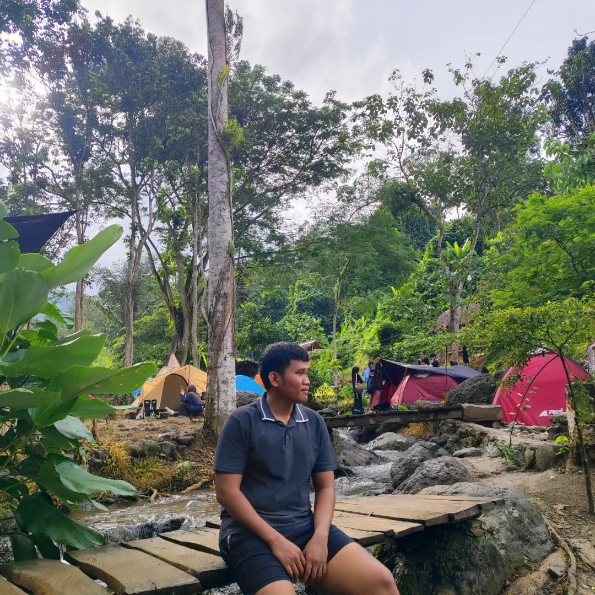

Halo, saya
Mahasiswa PTI
Belajar, berkarya, dan mengembangkan kemampuan di bidang Teknologi Informasi.
Lihat Profil
Halo, saya
Belajar, berkarya, dan mengembangkan kemampuan di bidang Teknologi Informasi.
Lihat Profil

Halo! Saya Muhammad Fajri, seorang mahasiswa yang tertarik pada teknologi, pemrograman, dan jaringan komputer. Saya senang belajar hal baru, mencoba berbagai hal, dan terus mengembangkan kemampuan untuk menjadi lebih baik.
Mempelajari pembuatan database dan tabel serta melakukan proses tambah, ubah, hapus, dan pencarian data.
Mempelajari konfigurasi IP address, switch, router, dan simulasi jaringan menggunakan Cisco Packet Tracer.
Membuat website sederhana menggunakan HTML dan CSS, mulai dari struktur halaman, navigasi, hingga tampilan website.
Membuat program sederhana menggunakan Java dengan mempelajari variabel, operator, Scanner,aritmatika modulus, dan penggunaan Escape Sequence.